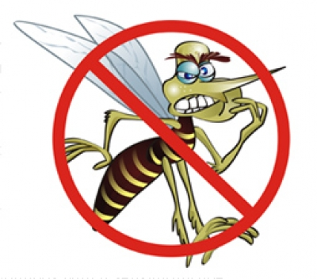

Casos de dengue Número de casos novos confirmados de dengue (clássico e febre hemorrágica da dengue – códigos A90-A91 da CID-10), por 100 mil habitantes, na população residente em determinado espaço geográfico, no ano considerado.
Caso confirmado Caso confirmado de dengue baseia-se em critérios adotados pelo Ministério da Saúde para orientar as ações de vigilância epidemiológica da doença em todo o país.
Comentário: Estima o risco de ocorrência de casos de dengue, em períodos endêmicos e epidêmicos, numa determinada população em intervalo de tempo determinado.
Está relacionada à picada do mosquito Aedes aegypti infectado com o vírus da dengue (grupo dos flavivírus), dos sorotipos 1, 2, 3 ou 4. O vetor está presente em todos os estados Brasileiros, com circulação simultânea dos sorotipos 1, 2 e 3 do vírus da dengue em 24 unidades federadas em 2005. Não há registro da circulação do tipo 4 no Brasil.
Estão associadas a condições socioambientais propícias à proliferação do Aedes aegypti e a insuficientes ações de controle vetorial. (RIPSA, Indicadores básicos para a saúde no Brasil: conceitos e aplicações, 2009)
Fonte: Taxa de incidência da dengue diponível em http://dados.gov.br/dataset/taxa-de-incidencia-da-dengue
